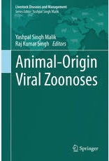
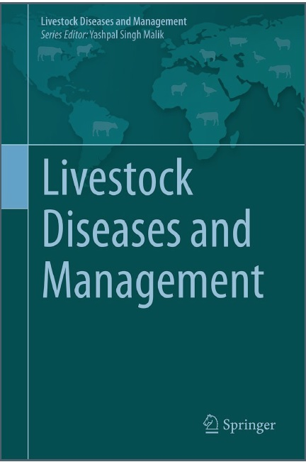
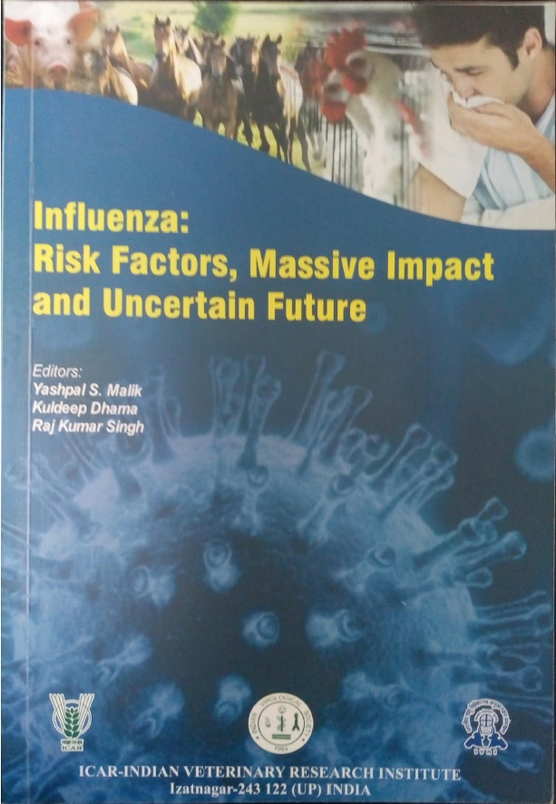
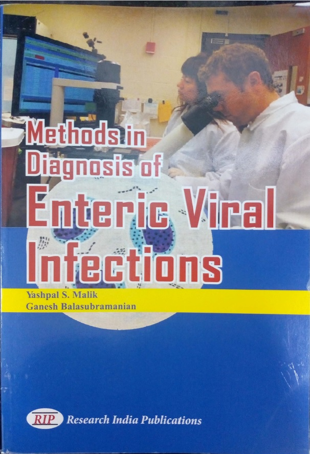

Livestock Diseases & Management

Recent Advances in Animal Virology

Emerging & Transboundary Animal Viruses

Genomics & Biotechnolgical Advances in Veterinary, Poultry and Fishries

Blutounge
A compilation on major small ruminants viral problem. The viral disease is
endemic in the country. The book discloses its epidemiology, virus structure and many other
features
About The
Book

Influenza: Risk factor,Massive Impact,Uncertain Future

Trends in Diagnosis of Animal Viral Diseases

Methods in Diagnosis of Enteric Viral Infections
A compilation on major small ruminants viral problem. The viral disease is endemic in the country. The book discloses its epidemiology, virus structure and many other features About The Book